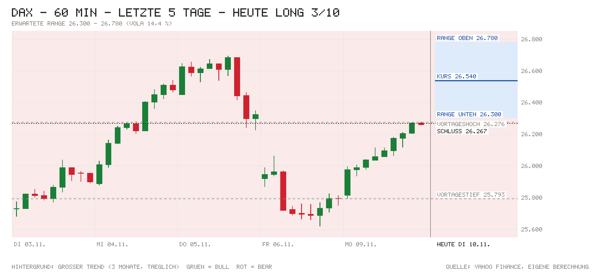

Tagesentscheidung ab 09:04 bis 17:30 Uhr
Der Rückenwind ist breit: Die Wall Street erholte sich kräftig (Nasdaq 100 +3,40 %), der Nikkei legt +2,87 % zu, Brent fällt auf 91,18 USD, und Infineon stellt für 2027 mehr als 20 % Umsatzwachstum in Aussicht (vorbörslich ca. +7,5 %). Dagegen steht: Die Lücke von +1,04 % ist schon gelaufen, das Rekordhoch bei 26.693 liegt nur 0,6 % entfernt, und um 14:30 kommen die US-Verbraucherpreise. ING erwartet die Kernrate mit 0,3 % über dem Konsens; ein heißer Wert würde die schon zu 82 % eingepreiste Fed-Erhöhung im Dezember festigen. Darum nur 3/10.
- Kurs um 09:04
- 26.540
- Erwartete Range
- 26.300 – 26.780
- Eingepreist (Tagesoption)
- ±0,91 %
Einschätzung vom Kurs um 09:04 (Median der Indikationen L&S, J.P. Morgan, UBS) bis zum Xetra-Schluss. Range = ±1 σ für die restliche Handelszeit aus der DAX-Tagesoption (ca. 68 %). Keine Anlageberatung.
Chart

Signale
| Signal | Wirkung | Stand und Einordnung |
|---|---|---|
| Vorgaben USA | Rückenwind | Montag: S&P 500 +2,35 %, Nasdaq 100 +3,40 %, Dow +2,15 % – Chipwerte (Micron, AMD, Applied Materials) +6 bis +13 %, Nvidia −4,3 %. Futures jetzt: S&P +0,17 %, Nasdaq −0,12 %, Dow +0,43 % – Niveau gehalten. |
| Eröffnung & erste Minuten | Neutral | Indikation 26.540 (+1,04 % zum Xetra-Schluss 26.267); Eröffnung und Hoch/Tief zum Abruf noch n/v. Die Lücke ist schon groß, das Rekordhoch 26.693 (05.11.) wirkt als Bremse (eigene Einschätzung). |
| Asien & China | Rückenwind | Nikkei +2,87 %, Shanghai +0,08 %, CSI 300 +0,07 %, Hang Seng +0,38 %. |
| Datenüberraschungen | Neutral | Seit Freitag keine wichtigen Daten (Payrolls 165K vs. 65K, Michigan 51,0 vs. 48,1). Frankreichs Arbeitslosenquote heute früh: Ist n/v. |
| Zinserwartung | Gegenwind | Fed 09.12.: 82 % für +25 Bp. (gestern 76 %); EZB-Einlagensatz 2,50 %. |
| Renditen | Neutral | Bund 10J 3,25 % (−2 Bp.), US 10J 4,87 % live (+1 Bp.; 1 Woche: −4 Bp.). |
| Kreditstress | Rückenwind | FRED n/v; Ersatz: HYG +0,36 %, LQD +0,13 % – Kreditmärkte entspannt. |
| Öl & Dollar | Rückenwind | Brent 91,18 USD (−1,50 %), WTI zeitweise auf dem tiefsten Stand seit Anfang September – Trump hält neue große Iran-Angriffe für „höchst unwahrscheinlich“. EUR/USD 1,1245 (+0,87 %) belastet Exporteure leicht. |
| Trend | Neutral | Über 21-T. (25.663), 50-T. (25.556) und 200-T.-Schnitt (24.932). Großer Trend Bear seit 22.10., dreht bei Schluss über 26.458 auf Bull – mit dem Kurs von jetzt wäre das der Fall. |
| Positionierung | Neutral | COT 03.11.: Hedgefonds im S&P-Future netto −372.318 (+28.286), Asset Manager +928.584. Kein Extrem. |
| Unternehmensnachrichten | Rückenwind | Infineon: Rekordquartal, 2027 >20 % Umsatzplus und +5 Punkte Marge, vorbörslich 52,25 € (+7,5 %). Henkel hebt Ziel für organisches Wachstum auf 3,0–4,0 %. |
| Profi-Sicht | Gegenwind | ING: US-Inflation heute „zu heiß für Bequemlichkeit“, Kernrate 0,3 % (über Konsens 0,2 %); stützt den Dollar leicht. |
| Termine bis 17:30 | Gegenwind | 14:30 US-Verbraucherpreise (großer Termin), dazu 10:00 Fed-Mitglied Waller und 15:35 Logan. |
Großer Trend (3-Monats-Momentum)
- Stand
- Bear
- Seit
- 22.10. (5 Wechsel in 3 Monaten)
- Schluss 09.11.
- −0,24 % vs. Zins +0,60 %
- Heute dreht es bei Schluss über
- 26.458 (Schluss gestern −0,72 %)
Mit der Indikation von 26.540 läge der DAX über der Schwelle; stünde der Schluss dort, wäre das Signal ab heute Bull. Bull = Rendite der letzten 3 Monate über dem Geldmarktzins, Bear = darunter. Regel: Rendite der letzten 63 Handelstage (≈ 3 Monate) gegen den EZB-Einlagensatz, jeden Tag zum Schluss neu entschieden, Zeitrahmen Tageskerzen (nach Antonacci 2014, dort monatlich über 12 Monate; täglich entschieden dreht es öfter falsch). Keine Anlageberatung.
Bilanz von gestern
09.11.: Long 3/10 – Richtung richtig, +479 Punkte (Kurs zur Notiz 25.788, Schluss 26.267, Hoch 26.276, Tief 25.824). Range ±316 um den Kurs zur Notiz verfehlt (Bewegung +479); bisher 50 % von 4 Tagen getroffen (Soll ca. 68 %). Gesamt seit Start: 4 Einschätzungen, Richtung richtig 25 %, Summe −333 Punkte bis Schluss (Schnitt −83).
Marktlage
| Markt | Stand | Veränderung |
|---|---|---|
| DAX (Schluss 09.11.) | 26.267,19 | +1,73 % |
| DAX (Eröffnung heute) | n/v | n/v |
| DAX (jetzt, Kurs zur Notiz 09:04) | 26.540 | +1,04 % |
| S&P 500 (Schluss 09.11.) | 7.549,94 | +2,35 % |
| Nasdaq 100 (Schluss 09.11.) | 27.907,63 | +3,40 % |
| Dow Jones (Schluss 09.11.) | 52.389,75 | +2,15 % |
| US-Futures (S&P / Nasdaq) | 7.586,75 / 27.979,75 | +0,17 % / −0,12 % |
| Nikkei 225 | Eröffnung 59.372 → Schluss 60.460 | +2,87 % |
| Shanghai Composite | Eröffnung 3.682 → Schluss 3.664 | +0,08 % |
| CSI 300 | Eröffnung 4.089 → Schluss 4.059 | +0,07 % |
| Hang Seng | Eröffnung 24.621 → aktuell 24.543 | +0,38 % |
| EUR/USD | 1,1245 | +0,87 % |
| Brent (USD/Barrel) | 91,18 | −1,50 % |
| Gold (USD/Unze) | 4.122,40 | +0,19 % |
| VIX (Schluss 09.11.) | 19,92 | −22,31 % |
China: Festland-Börsen gaben die Eröffnungsgewinne fast ganz ab und schlossen kaum verändert; laut ING trägt der globale KI-Boom weiter den Außenhandel (eigene Zusammenfassung). Veränderungen der US-Indizes und des VIX gegen Freitag, 06.11. DAX-Eröffnung lag zum Datenabruf (Yahoo, bis 15 min verzögert) noch nicht vor. Kein Feiertag.
Anleihen & Zinsen
| Markt | Stand | Veränderung |
|---|---|---|
| Bund 2J | 2,99 % | ±0 Bp. (vs. Bundesbank 09.11.) |
| Bund 10J | 3,25 % | −2 Bp. |
| US-Treasury 2J | 4,55 % (live) | −1 Bp. (vs. offiziell 09.11.: 4,56 %) |
| US-Treasury 10J | 4,87 % (live) / 4,88 % (offiziell 09.11.) | +1 Bp.; 1 Woche: −3 Bp. |
| Fed, Sitzung 09.12. | Erhöhung um 25 Bp. erwartet | 82 % Wahrscheinlichkeit |
| EZB-Einlagensatz | 2,50 % | zuletzt +25 Bp. (16.09.) |
| Euro-Hochzins-Aufschlag | n/v (FRED) | n/v |
| US-Hochzins (Ersatz: HYG) | 77,51 USD | +0,36 % (Tag) |
Termine heute
- 07:30 Quartalszahlen: Infineon (Q4/GJ 2026, Ausblick 2027: ca. 20 Mrd. € Umsatz, Q1 ca. 4,6 Mrd. €, Dividende 0,38 €); Henkel (Q3: Umsatz 5,713 Mrd. €, organisch +6,5 %)
- 07:30 Frankreich: Arbeitslosenquote – Ist n/v · Prognose 8,4 % · zuvor 8,3 %
- 09:30 BoE-Mitglied Breeden spricht
- 10:00 Fed-Mitglied Waller spricht
- 12:00 USA: NFIB-Mittelstandsoptimismus – Prognose 98,0 · zuvor 97,9
- 14:30 USA: Verbraucherpreise Oktober – Prognose +0,3 % m/m (zuvor 0,6 %), 3,9 % j/j (zuvor 3,7 %); Kernrate Prognose +0,2 % m/m (zuvor 0,3 %), 2,8 % j/j (zuvor 2,6 %)
- 15:35 Fed-Mitglied Logan spricht
- 17:45 EZB-Chefvolkswirt Lane spricht (nach Xetra-Schluss)
Nachrichten zu DAX-Werten
- Infineon: Rekordquartal zum Ende des Geschäftsjahres; für 2027 mehr als 20 % Umsatzwachstum auf ca. 20 Mrd. € (bei EUR/USD 1,15) und rund 5 Prozentpunkte mehr Segmentmarge; Investitionen 3,0–3,5 Mrd. €. Vorbörslich 52,25 € (+7,5 %). Einschätzung: klar positiv, KI-Rechenzentren treiben; zieht Chipwerte mit.
- Henkel: Q3-Umsatz +11,0 % auf 5,713 Mrd. €, organisch +6,5 %; Ziel für organisches Wachstum auf 3,0–4,0 % angehoben, Umsatzrendite ca. 15 % (zuvor 14,5–16,0 %), Rohstoffkosten steigen stärker. Einschätzung: leicht positiv, Eckdaten waren schon Ende Oktober bekannt.
- Commerzbank: UniCredit will nach den letzten Genehmigungen (bis Ende November) per außerordentlicher Hauptversammlung den Aufsichtsrat umbauen und Anfang 2027 das Kommando übernehmen; Aktie gestern +4,5 %. Einschätzung: neutral bis positiv, Übernahmefantasie stützt.
- SAP und Chipwerte: Keine eigenen Nachrichten; die Erholung der US-Tech-Werte (Nasdaq 100 +3,40 %) gibt Rückenwind, Nvidia-Schwäche (−4,3 %) bleibt ein Störfaktor. Einschätzung: leicht positiv (eigene Einschätzung).
Profi-Sicht & Positionierung
- ING THINK: Die US-Kernrate dürfte mit 0,3 % m/m etwas über dem Konsens liegen – „zu heiß“, um tiefere Zinsen zu rechtfertigen; eine 10J-US-Rendite um 5 % fände ING aber attraktiv (Rates Spark). Der Dollar dürfte heute leicht Unterstützung bekommen; EUR/USD soll sich bei 1,120–1,125 einpendeln, Jahresendziel 1,130. Die gestrige Rally erklärt ING mit der Aktienerholung und dem Ölpreisrückgang (FX Daily).
- Positionierung (COT, Stand 03.11.): Hedgefonds im S&P-Future netto −372.318 (+28.286), Asset Manager +928.584 (+5.135); Euro: Asset Manager bauen Long ab (−28.324). Daten vor dem Einbruch der Vorwoche; kein Extrem.
Quellen
- Marktdaten per Skript: Amber Terminal / Yahoo Finance (Kurse, Futures, HYG/LQD), onvista (Indikationen, VDAX), Eurex (DAX-Tagesoption ODAP), Nasdaq (Kalender), CNBC / Bundesbank / US-Treasury (Renditen), CFTC (COT), ING THINK; FRED (Kreditaufschläge) nicht erreichbar
- onvista/dpa-AFX: Börsentag auf einen Blick – Rekordhoch rückt wieder näher
- finanzen.at/dpa-AFX: Aktien Frankfurt Ausblick – Anleger bleiben in Kauflaune
- EQS-News: Infineon schließt GJ 2026 mit Rekordquartal ab
- ad-hoc-news: Infineon-Aktie vorbörslich 52,25 Euro, 7,46 Prozent höher
- Henkel: Sehr starke Umsatzsteigerung im dritten Quartal
- finanzen.net/dpa-AFX: Unicredit will bei Commerzbank schnell das Kommando übernehmen
- ING THINK: Rates Spark – US inflation likely too hot for comfort
- ING THINK: FX Daily – US inflation to offer some support to USD today
- ING THINK: Chinese trade continues to ride the global AI boom